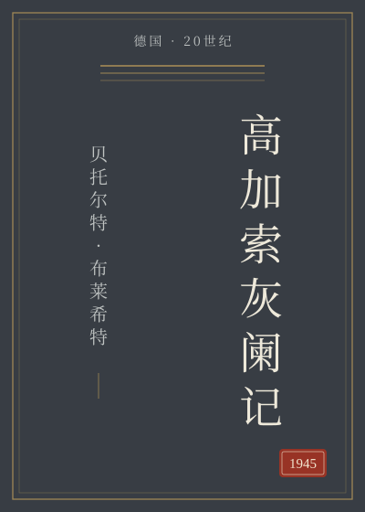
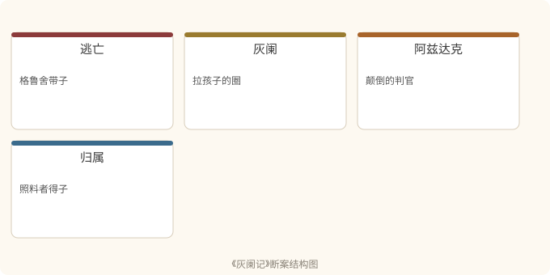

高加索灰阑记
一、基本信息
| 作者 | 布莱希特 |
|---|---|
| 成书/出版 | 1945年（作者页 B138 口径：高加索灰阑记（1945）） Bertolt Brecht — Encyclopaedia Britannica（百科全书） |
| 国别/地区 | 德国 |
| 时代 | 现当代 · 20世纪 |
| 体裁 | 寓意剧 |
| 语言 | 德语 |

《灰阑记》断案结构图（主题·结构图）
二、创作背景
作者页（B138）：布莱希特 major_works 载'高加索灰阑记（1945）'——取材中国元杂剧《灰阑记》（B138 作者页定位+通说待核）。
设定（通说待核）：战后高加索的果园归属争论+格鲁吉亚'灰阑断案'戏中戏。
三、内容脉络
格鲁舍抢救总督之子——'孩子给细心照顾他的人'（通说待核）。
阿兹达克的灰阑断案（通说待核）。
四、主要人物表
| 人物 | 身份 | 说明 |
|---|---|---|
| 格鲁舍 | 女仆 | 逃亡的养母（通说待核） |
| 阿兹达克 | 法官 | 颠倒的判官（通说待核） |
五、主题与艺术特点
- '按功归属'：照料优于血缘（通说）。
- 中国元剧的德国转化（通说待核）。
- 歌队与说唱叙事（通说）。
六、影响与评论
- 作者页：布莱希特晚期寓意剧（B138 作者页口径）。
Bertolt Brecht — Encyclopaedia Britannica（百科全书） - 取材元杂剧《灰阑记》（通说待核）。
Bertolt Brecht — Encyclopaedia Britannica（百科全书）
七、阅读建议
难点
- '灰阑'的中国原典对照。
- 歌队说唱。
- 《高加索灰阑记》（人民文学出版社《布莱希特戏剧选》，通说待核）。
- 德文原版（Suhrkamp）。
对照元杂剧《包待制智勘灰阑记》。
八、待核实
- 1945年写成、1948年首演说核对。
- 格鲁舍/阿兹达克人名核对。
- 与元杂剧的谱系关系待核。
本页主要来源
布莱希特的其他收录作品：三分钱歌剧